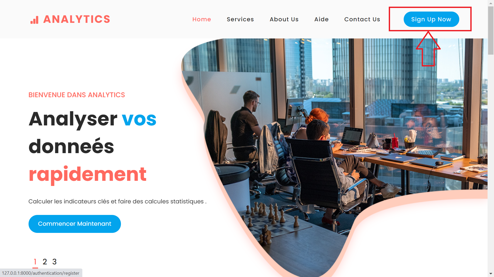
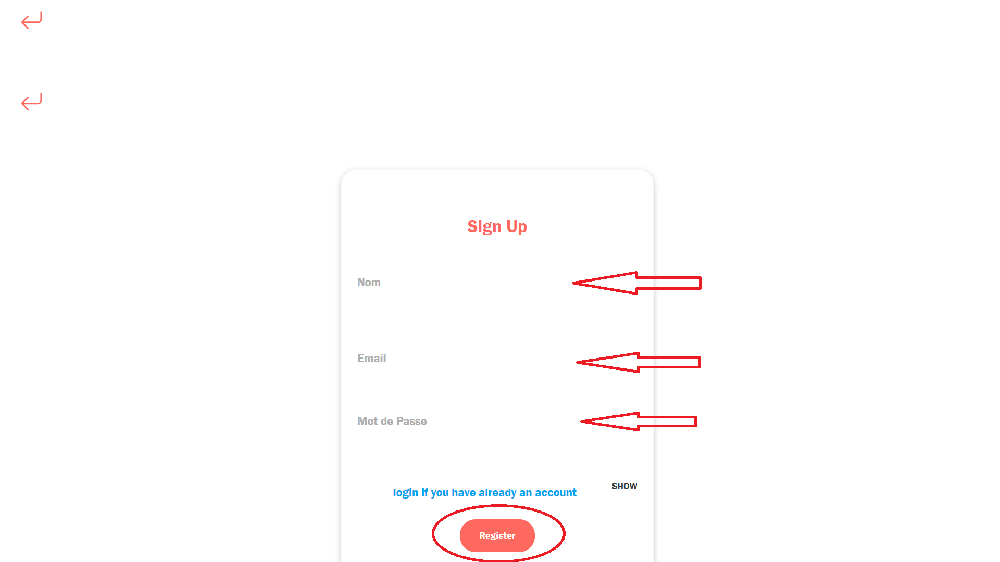
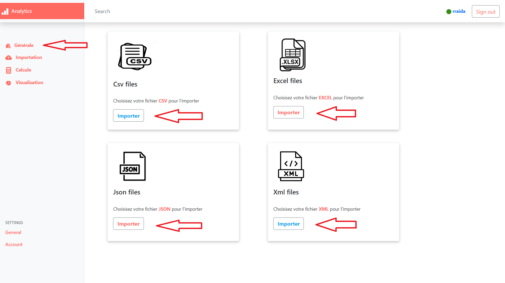
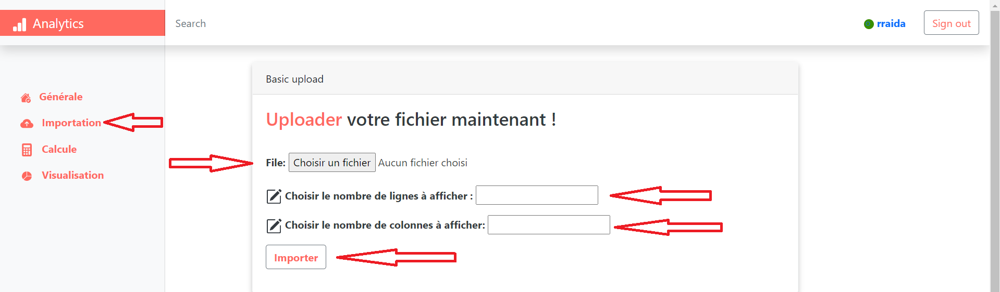
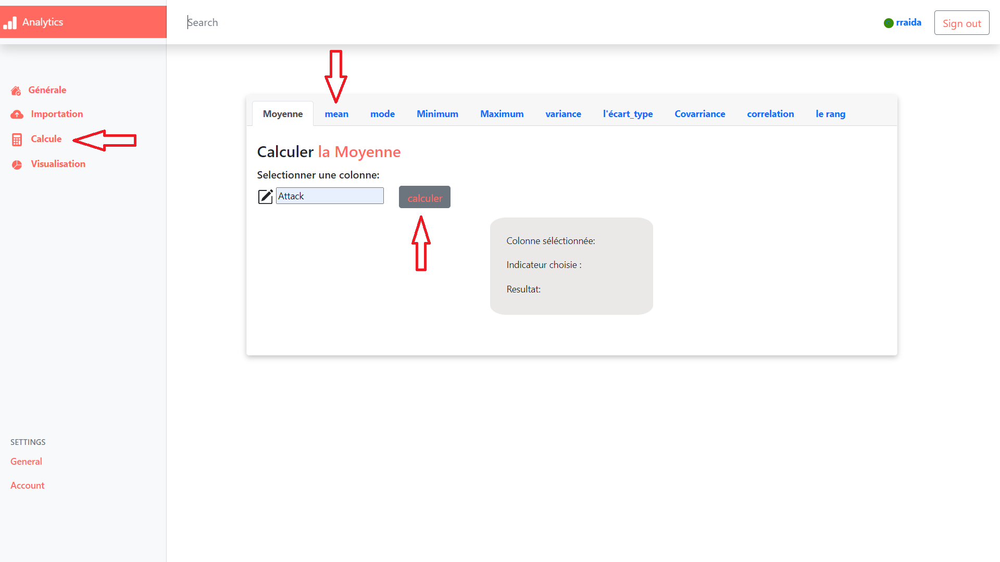
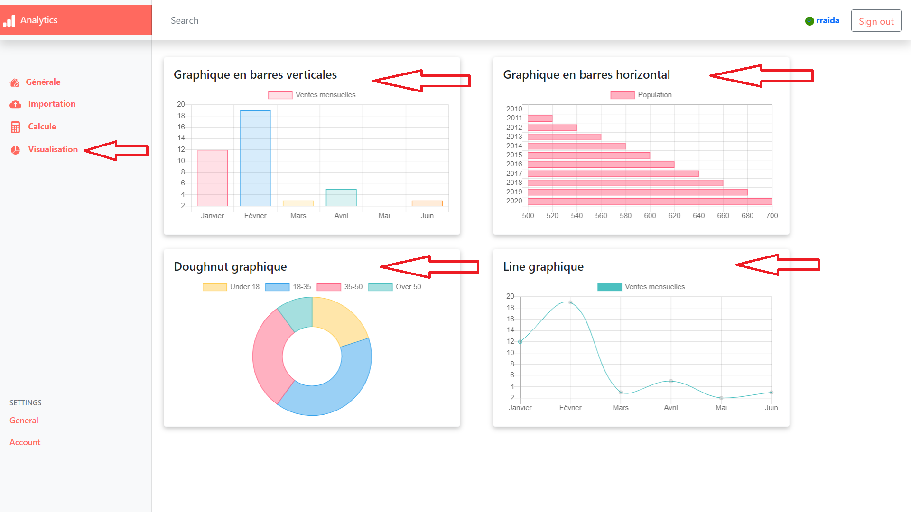
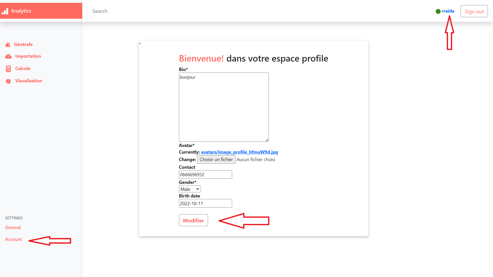

Aide !
Créer un compte:
Bienvenue sur
Analytics App ! Voici quelques astuces rapides pour créer votre compte :
Cliquez sur le bouton "Sign Up Now" dans le coin supérieur droit de l'écran.
Ecriver votre nom et votre adresse e-mail et choisissez un mot de passe.
Cliquez sur "Register" pour créer votre compte.


Importer un fichier:
Pour importer une base de données afin de calculer les indicateurs clés, suivez ces étapes :
Cliquez sur le bouton "Importer" sur la page pricipale selon le type du fichier que vous souhaitez de l'importer.
Sélectionnez le fichier qui existe dans votre machine pour qu'il soit importé.
Choisissez le nombre de colonnes et ligns du fichier que vous souhaitez afficher.
Cliquez sur "Importer" pour que le fichier soit importé et affiché.


Calculer les indicateurs statistiques:
Pour calculer les indicateurs statistiques, suivez ces étapes :
Cliquez sur le bouton "Calcule" sur la page.
Sélectionnez l'indicateur clè que vous souhaitez de calculer (mode, moyenne, médiane, etc.)
Choisissez la colonne à utiliser pour le calcule.
Cliquez sur "Calculer" pour afficher le résultat.

Visualiser des graphiques:
Pour visualiser des graphiques de vos données, suivez ces étapes :
Cliquez sur le bouton "Visualisation" sur la page.
Sélectionnez le type de graphique que vous souhaitez créer (graphique à barres, graphique en ligne, graphique circulaire, etc.)
Choisissez la colonne à utiliser pour le graphique.
Cliquez sur "Créer" pour générer le graphique.

Modifier profile:
Pour modifier votre profil, suivez ces étapes :
Cliquez sur le bouton "Account" sur la page.
Remplir les champs que vous souhaiter avec vos informations.
Cliquez sur "Modifier" pour sauvegarder les modifications.

Si vous souhaitez voir les détails de l'analyse ou modifier les paramètres, vous pouvez le faire en cliquant sur le bouton "Analyser" à côté de la base de données sur votre tableau de bord.
Si vous avez des questions ou des problèmes, n'hésitez pas à contacter notre équipe de support en remplient le formulaire "Contact Us" dans le pied de page d'accueil.